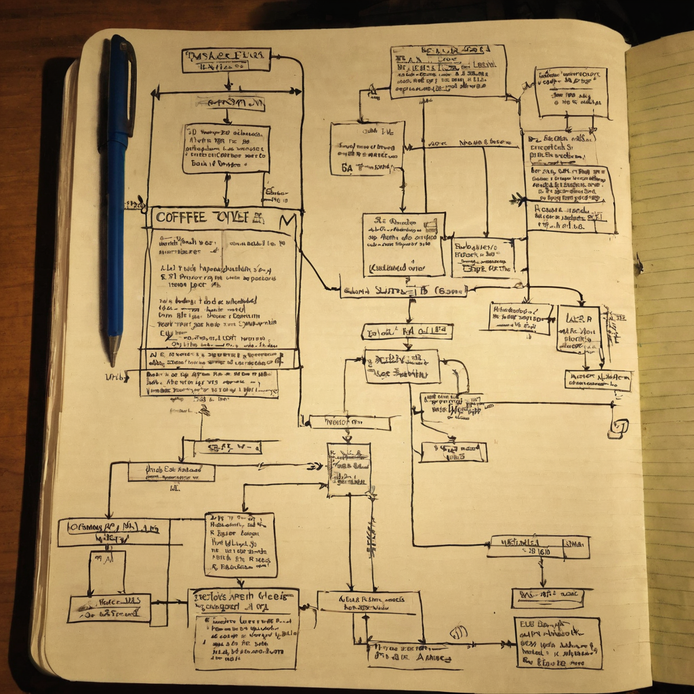

I save a lot of posts because something in them tells me there is a bigger idea underneath. This one is different. I went back to look at why I bookmarked it, and there is nothing there but a shortened link.
@tonysimons_ posted a status on X that is just a t.co link, no caption, no quote, no explanation of what it points to. Whatever @tonysimons_ was sharing lives entirely behind that shortened URL, and the destination is not visible from the post text alone.

This happens more than people admit. Someone shares a link with zero context because the context is obvious to them in the moment, or because the post is a quote tweet, a reply, or an embed that loses its frame once it gets bookmarked on its own. For anyone trying to build a system that turns bookmarks into useful writing, this is a real workflow problem, not just an annoying edge case. A pipeline that assumes every saved post has enough text to summarize will eventually choke on posts like this one.
It also says something about how fragile shared context is on X. A link by itself, days or weeks later, can turn into a dead end unless someone captured the destination at save time.
What it does: Right now, nothing I can describe, because the destination is not visible from the post text alone.
Who it helps: Nobody yet, until the link is resolved and the actual content is known.
What problem it points to: Bookmark pipelines need to capture the resolved destination URL at the moment of saving, not just the shortened link and the post ID. Otherwise you end up with exactly this: a saved item with no usable signal.
What still needs work: My own capture step. If a bookmark comes in with a bare link and no caption, the system should try to resolve it immediately, grab the title and a snippet of the destination page, and store that alongside the original post. Waiting until draft time is too late if the link expires, gets deleted, or the context around it changes.
What I would test first: Adding a simple link-resolution check right at bookmark time, so every saved post either has real text to work from or a resolved destination to describe.
Where this could go: A more resilient pipeline that treats "bare link, no caption" as its own category, flags it for manual follow-up instead of trying to force a full article out of nothing.
I am genuinely curious what @tonysimons_ was pointing people to here. A single link with no caption usually means the person assumes the audience already has the context, which is a very normal way to post. Whatever it leads to, this is a good reminder for me to tighten up how I capture links the moment I bookmark them, so future me is not stuck staring at a dead end like this.
I will keep an eye on @tonysimons_'s other posts for more context, and if the destination becomes clear later, this is worth revisiting properly. In the meantime, this is a nudge to fix the capture step in my own pipeline so bare-link bookmarks do not slip through without enough to work with.
Source: X post by @tonysimons_, https://x.com/i/web/status/2077923978249724073, retrieved on 2026-07-17.
External references: none resolved from the post at time of writing.